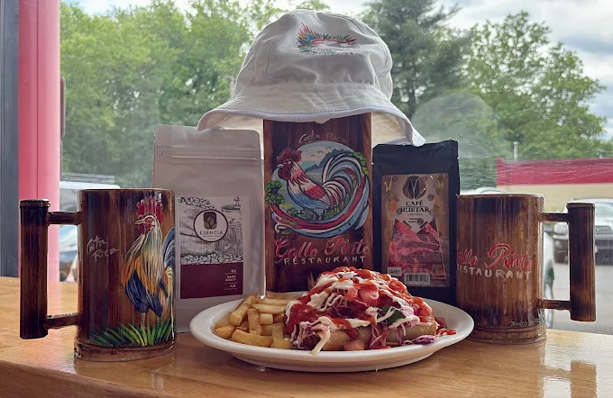

About Us
As a new family-owned restaurant in Hawthorne, NJ, Gallo Pinto Restaurant is proud to share the authentic flavors of Costa Rica with our community. Though newly opened, our passion for tradition runs deep — every dish is crafted with care, honoring family recipes and the pura vida spirit. We invite you to taste the freshness and warmth of Costa Rican hospitality, where family, flavor, and pura vida come together.
We’re proud to share our roots with every plate we serve.

Contact & Hours
Address:
1103 Goffle Rd Suite #3, Hawthorne, NJ 07506
Get Directions
Phone: (973) 304-1501
Open Mon-Sat:
6:00 AM - 8:00 PM
Sun:
9:00 AM - 3:00 PM
Follow Us Online